ƒ/5 · 1/160 · ISO 800 · 30mm
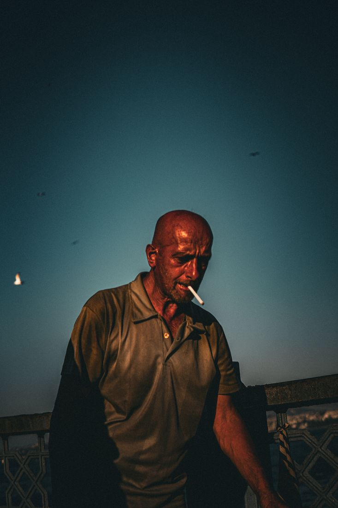
ƒ/2.2 · 1/4000 · ISO 100 · 30mm
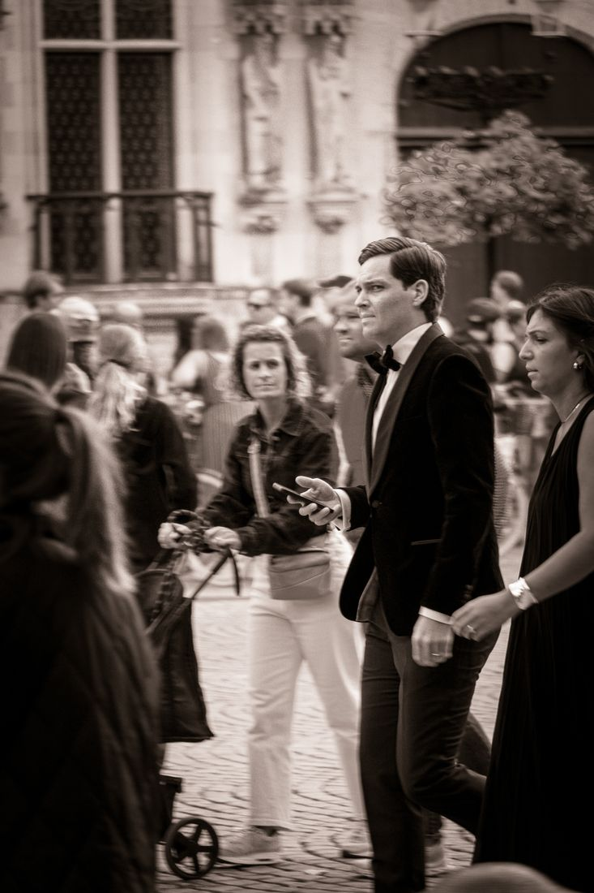
ƒ/5.6 · 1/100 · ISO 125 · 135mm
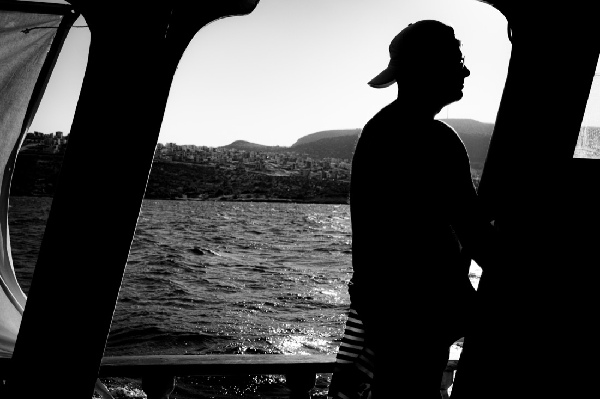
ƒ/8 · 1/1000 · ISO 100 · 29mm
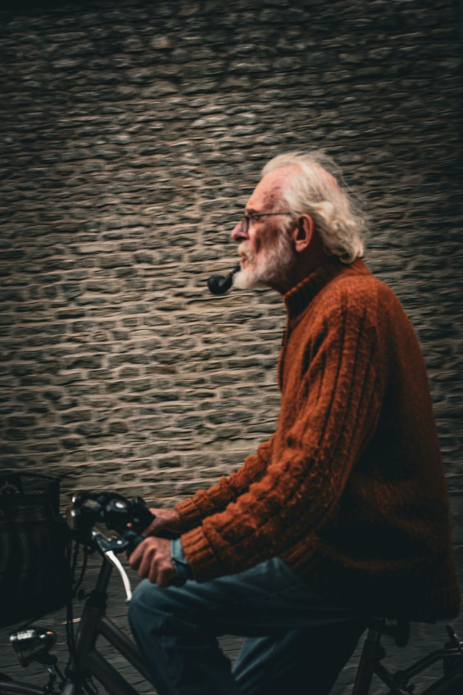
ƒ/5 · 1/160 · ISO 320 · 56mm
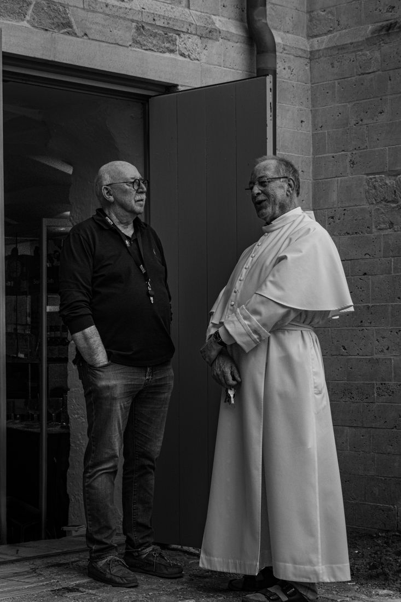
ƒ/5 · 1/160 · ISO 320 · 49mm
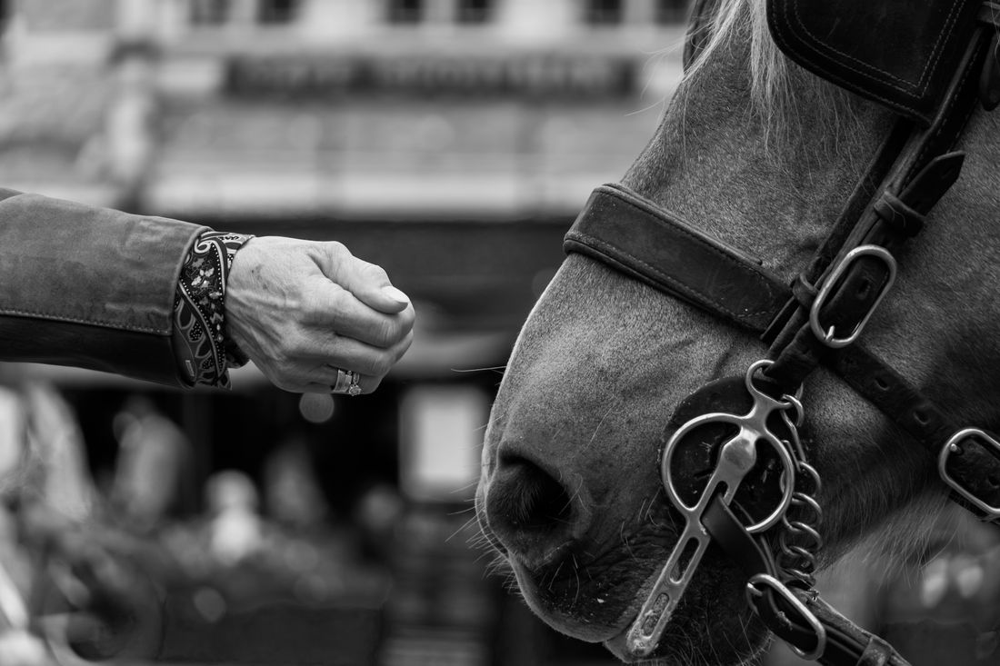
ƒ/5.6 · 1/2000 · ISO 1600 · 135mm
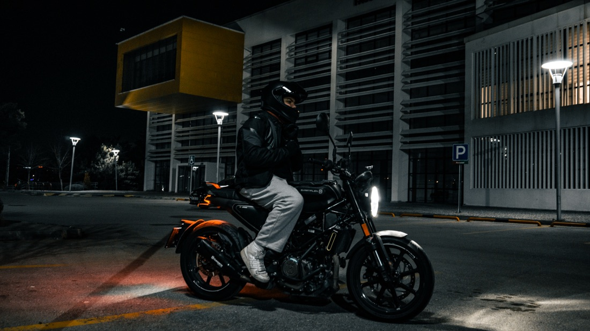
ƒ/5.6 · 1/5 · ISO 800 · 22mm
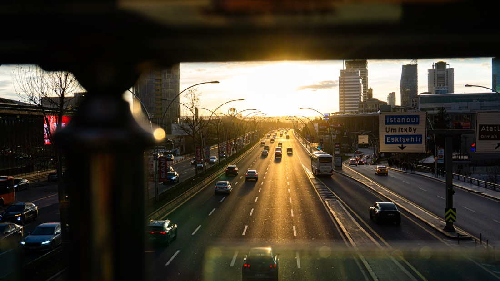
ƒ/6.3 · 1/60 · ISO 100 · 28mm
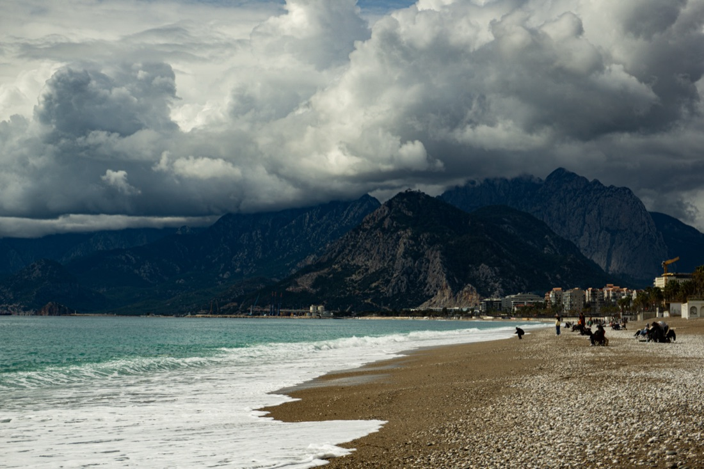
ƒ/5.6 · 1/1250 · ISO 100 · 50mm
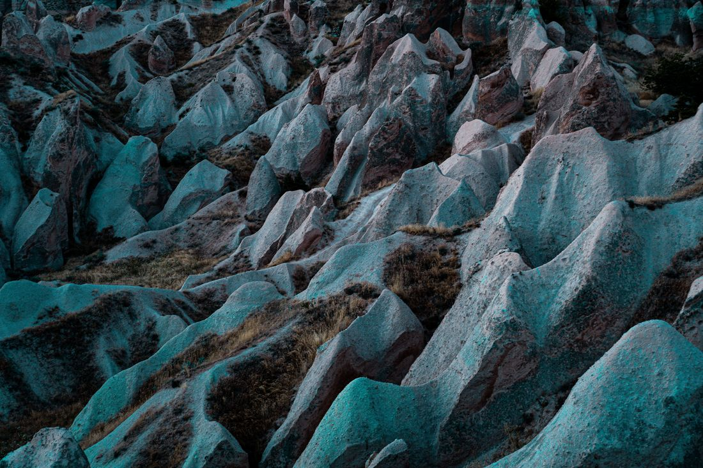
ƒ/4.5 · 1/160 · ISO 200 · 39mm
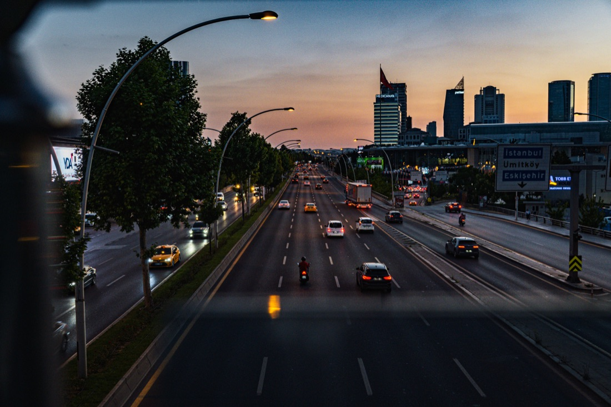
ƒ/5.6 · 1/60 · ISO 640 · 29mm
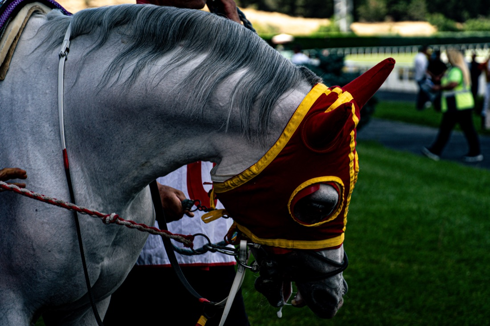
ƒ/5.6 · 1/500 · ISO 200 · 87mm

ƒ/6.3 · 1/1000 · ISO 100 · 24mm

ƒ/4 · 1/3200 · ISO 100 · 24mm
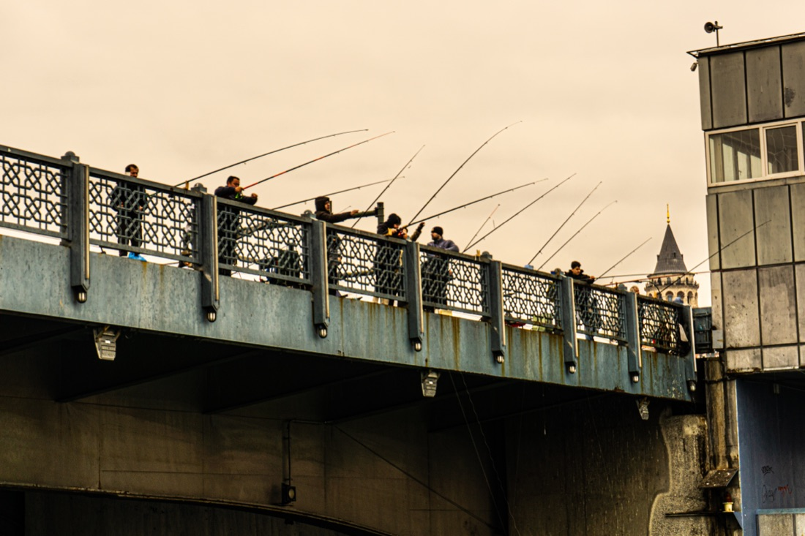
ƒ/5.6 · 1/200 · ISO 100 · 50mm
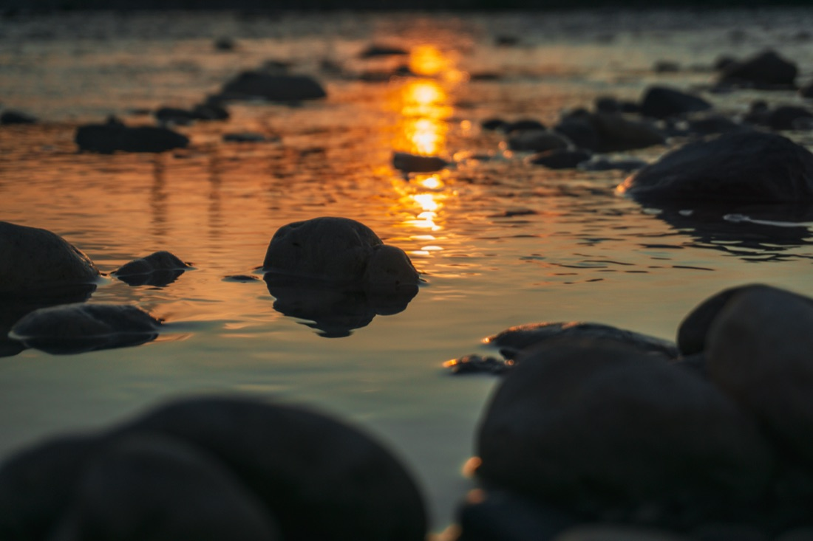
ƒ/5.6 · 1/1000 · ISO 160 · 50mm
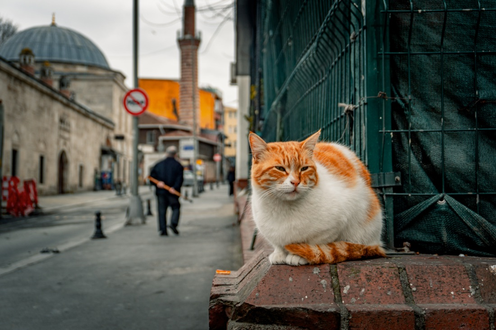
ƒ/5.6 · 1/320 · ISO 100 · 35mm
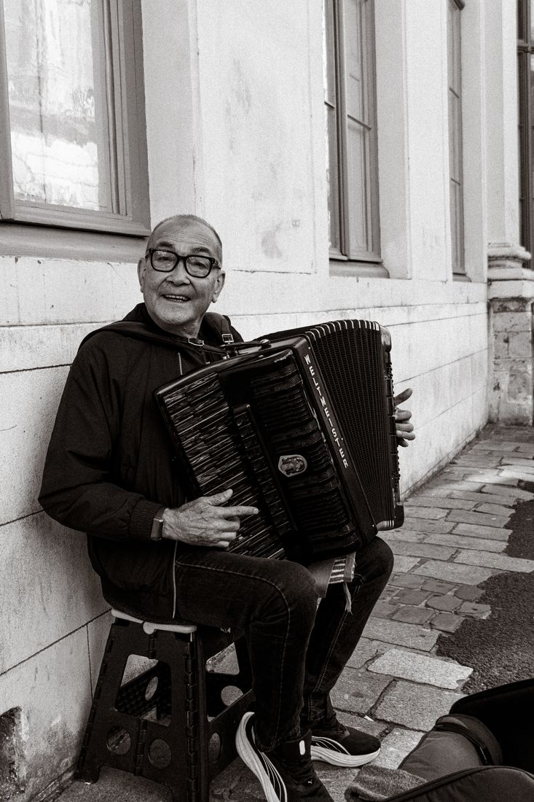
ƒ/4.5 · 1/160 · ISO 125 · 28mm

ƒ/9 · 1/10 · ISO 100 · 19mm